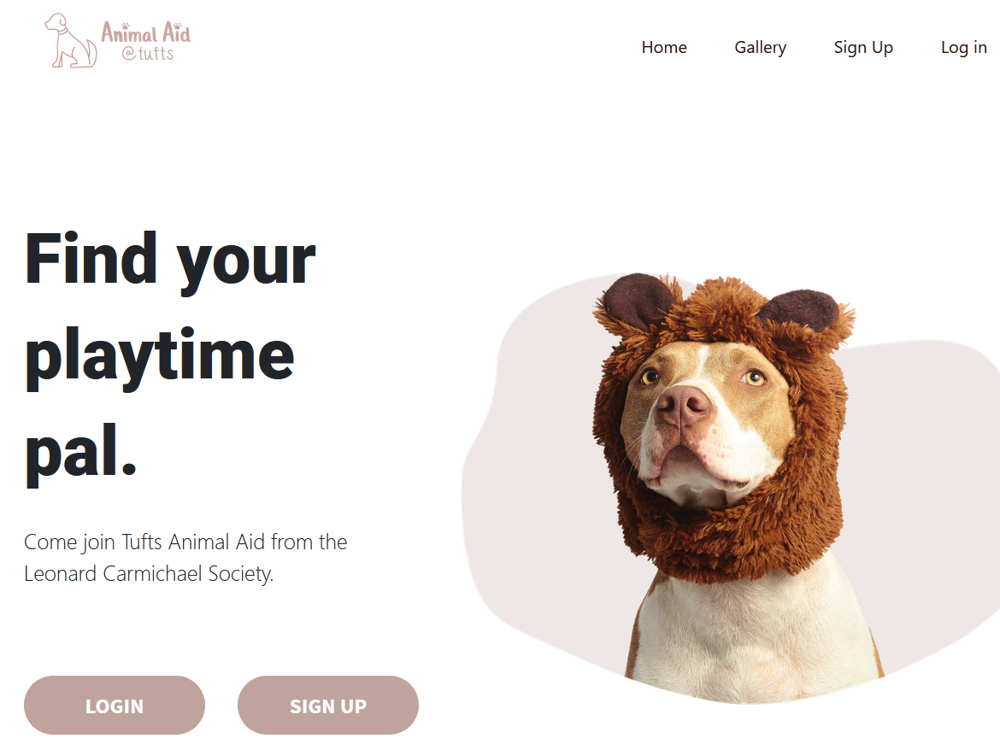
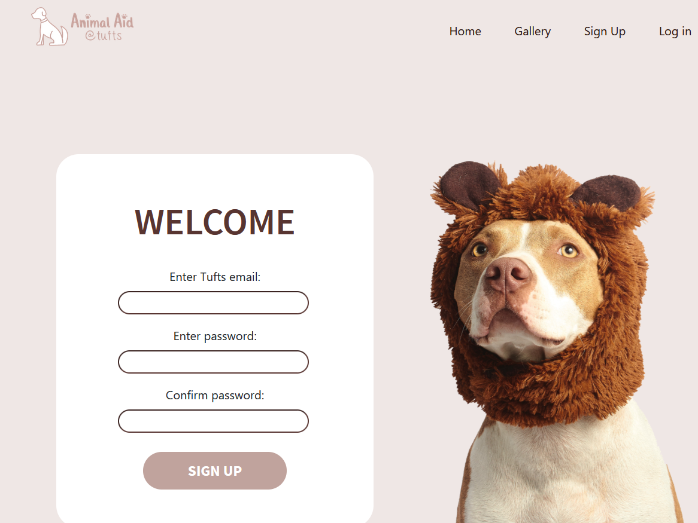
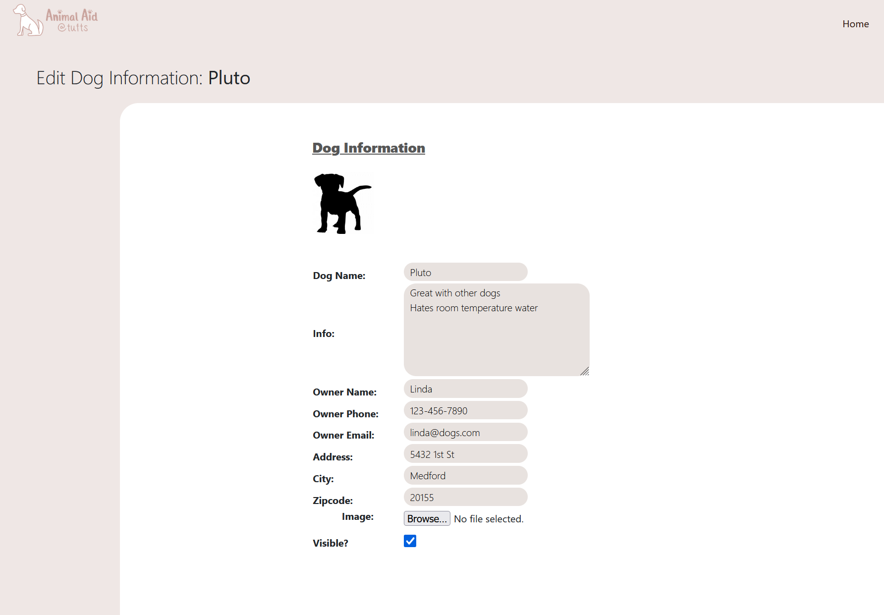
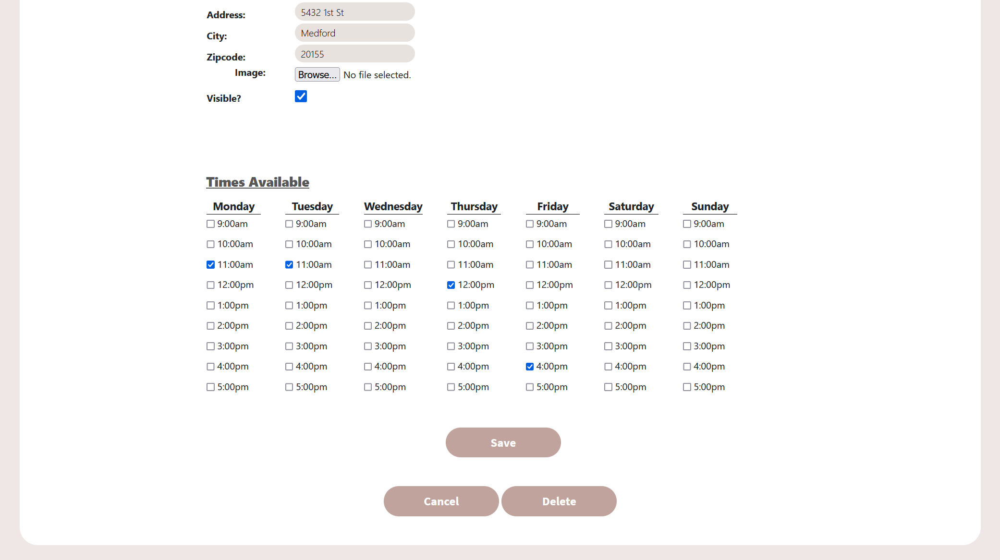
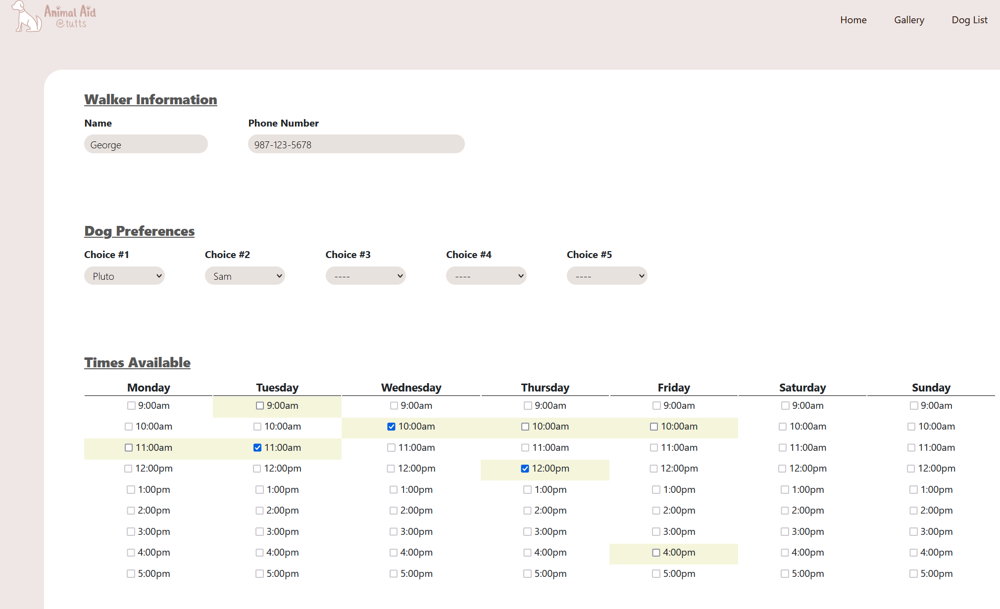

LANGUAGES

TECHNOLOGIES


Animal Aid is a student organization which connects students walkers to local dogs who need to be walked. However, the process of matching students with dogs was always done manually by comparing dozens of spreadsheets containing student and dog schedules. This laborous process severely limited their scope, demanding a more handsfree solution. My team and I built a platform which allows students to log in and store their info - including dog preferences - and allows the Animal Aid team to add dog profiles to the site. Once the signup deadline rolls around it's effortless to run our matching algorithm, populating student profiles with individualized walking schedules.





I implemented features both on the frontend and backend. A challenge my
team faced was giving the Animal Aid staff the ability to add dog
profiles to the site, along with their individual hour-by-hour schedules
and profile image. We planned on using Django's built-in admin UI for
this but quickly realized it was highly limited when handling a large
number of values. Since dogs had availabilities any hour between 9am and
6pm, 7 days a week, there were 63 boolean values to track, along with a
handful of strings like contact info, name, etc. We needed an interface
- with more freedom than Django ships with - to display and edit all
these values.
I used Python to pull dog info from PostgreSQL, then push them to
JavaScript as JSON, which finally populates text fields and a table of
checkboxes - generated by Django's template language - representing the
dog's schedule. Each cell dynamically changed color as an extra visual
indicator that the time block was checked. Alongside this I built a page
that lists all the active dogs with their profile images, and lets staff
add new dogs without even touching Django's admin page.
While the dog profile feature was one of my larger features, I was also
a significant contributor to the site's core matching algorithm. This
algorithm considered users' dog preferences and their respective
schedules to create matches with three goals: maximizing dog
preferences, maximizing number of matches, and keeping any single user
from having too many matches. I wrote the final algorithm entirely in
Python.
I also implemented password reset functionality using Django's built-in
user authentication system and SendGrid.